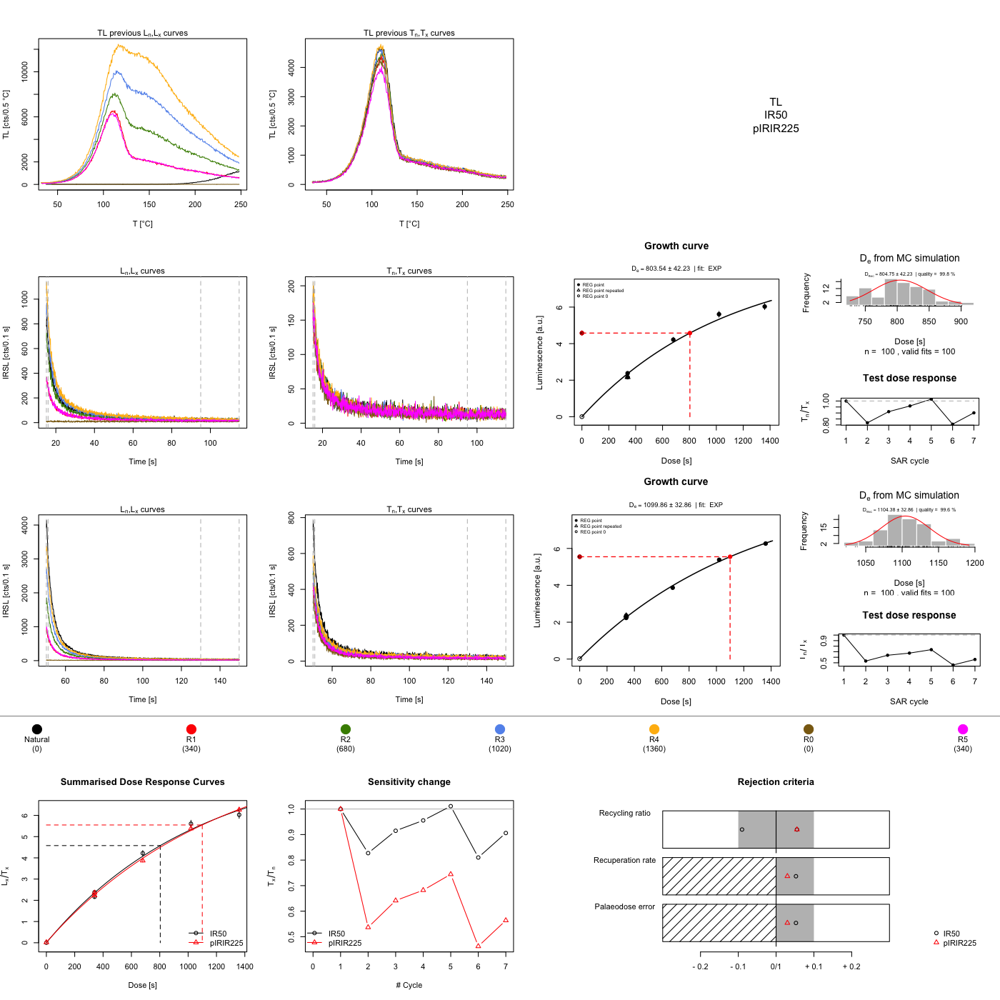
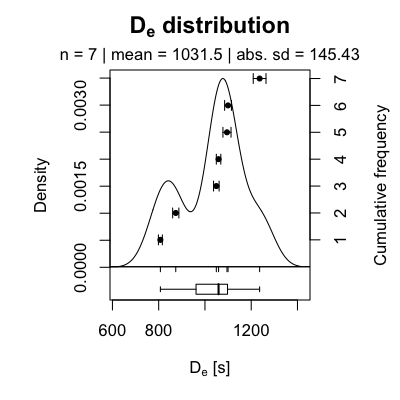
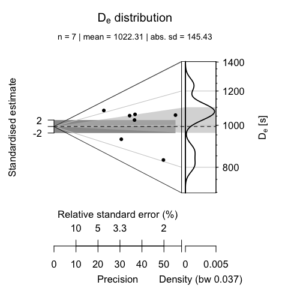

HowTo_analyse_pIRIRMeasurements.RmdUsing the function analyse_SAR.CWOSL() are Analyse_SAR.OSLdata() from the R package ‘Luminescence’ allows to analyse standard OSL (quartz) measurements based on the SAR protocol (Murray and Wintle 2000).
The function analyse_SAR.CWOSL() can also be used for analysing measurements based on the post-IR IRSL protocol (pIRIR, Thomsen et al. (2008)), since the measurement protocol based on the SAR structure (see the following table) comprising a set of curves with a \(L_{x}\) and \(T_{x}\) signal pattern.
| Step | Example | Signal |
|---|---|---|
| Irradiation | beta-irr. | - |
| Heating | preheat/TL | - |
| Stimulation | OSL | \(L_x\) |
| Irradiation | beta-irr. | - |
| Heating | cutheat/TL | - |
| Stimulation | OSL | \(T_x\) |
To lower the entry level and make the analysis of post-IR IRSL data more straightforward, some time ago, the function analyse_pIRIRSequence() was developed. This function is basically a wrapper around the two functions analyse_SAR.CWOSL() and plot_GrowthCurve().
This vignette provides a short tutorial exemplifying the analysis of post-IR IRSL data in R. To avoid misunderstandings, please keep in mind that the post-IR IRSL protocol is a simple extension of the SAR structure by introducing further stimulations steps only:
| Step | Example | Signal |
|---|---|---|
| Irradiation | beta-irr. | - |
| Heating | preheat/TL | - |
| Stimulation | IR\(_{50}\) | \(L_{x_{_1}}\) |
| Stimulation | pIRIR\(_{225}\) | \(L_{x_{_2}}\) |
| Irradiation | beta-irr. | - |
| Heating | preheat/TL | - |
| Stimulation | IR\(_{50}\) | \(T_{x_{_1}}\) |
| Stimulation | pIRIR\(_{225}\) | \(T_{x_{_2}}\) |
While the number of IRSL stimulation steps is not limited in general (cf. Fu, Li, and Li (2012)), the number of steps used for recording the signal of interest and the test dose signal must be equal. Example, if the sequence has two stimulation steps for the signal (\(L_{x_{_1}}\), \(L_{x_{_2}}\)) (as in the table given above), it also needs two stimulations steps for measuring the test dose. Further steps, e.g., hot bleach steps at the end of the cycle, are allowed, but do not belong to the SAR structure and should be removed prior any analysis using the function analyse_pIRIRSequence().
Note: The terminal and graphical output show below is partly truncated to shorten the length of this vignette, however, calling the functions in R will show the full output.
In our example, the measurement was carried out on a Freiberg Instruments lexsyg luminescence reader. Measurement data are stored in XML-based file format called XSYG. Two pIRIR signals were measured: A IR\(_{50}\) and a pIRIR\(_{225}\) signal. The preheat steps were carried out as TL.
To start with, the package ‘Luminescence’ itself has to be loaded. In a next step, measurement data are imported using the function read_XSYG2R(). If your input format is a BIN/BINX-file, replace the function read_XSYG2R() by read_BIN2R().
library(Luminescence)
temp <- read_XSYG2R("pIRIR_measurementData.xsyg", fastForward = TRUE, txtProgressBar = FALSE)To se the dataset in the R terminal, just call the object temp
## [[1]]
##
## [RLum.Analysis-class]
## originator: read_XSYG2R()
## protocol: pIRIR225
## additional info elements: 0
## number of records: 229
## .. : RLum.Data.Curve : 229
## .. .. : #1 TL (UVVIS) <> #2 TL (NA) <> #3 TL (NA)
## .. .. : #4 IRSL (UVVIS) <> #5 IRSL (NA) <> #6 IRSL (NA) <> #7 IRSL (NA) <> #8 IRSL (NA)
## .. .. : #9 IRSL (UVVIS) <> #10 IRSL (NA) <> #11 IRSL (NA) <> #12 IRSL (NA) <> #13 IRSL (NA)
## .. .. : #14 irradiation (NA)
## .. .. : #15 TL (UVVIS) <> #16 TL (NA) <> #17 TL (NA)
## .. .. : #18 IRSL (UVVIS) <> #19 IRSL (NA) <> #20 IRSL (NA) <> #21 IRSL (NA) <> #22 IRSL (NA)
## .. .. : #23 IRSL (UVVIS) <> #24 IRSL (NA) <> #25 IRSL (NA) <> #26 IRSL (NA) <> #27 IRSL (NA)
## ... <remaining records truncated manually>The output shows an RLum.Analysis object, which contains all recorded curves (RLum.Data.Curve objects) from one aliquot (e.g., cup/disc). In total, the dataset contains the curves of 7 aliquots. All records are numbered, here from #1 to #208 (shown only until #29) and named by their corresponding record type (TL, IRSL). So far available, within round brackets, information on the detector are given (UVVIS and NA). This reveals that the object contains curves which are not wanted for the analysis.
Curves which belong to a specific measurement step (e.g., IRSL stimulation) are connected with the <> symbol. However, curves with (NA) are curves recorded by technical components (e.g., temperature sensor) other than the photomultiplier tube and not wanted, even they belong to the dataset. In our case, unfortunately, the information (UVVIS) is rather uninformative, but a usual case, since it depends on the measurement device whether information on the detector are available or not. This example emphasises that prior knowledge of the data structure and the used technical components are indispensable.
To select only wanted curves wanted for the analysis the function get_RLum() can be used:
## [[1]]
##
## [RLum.Analysis-class]
## originator: read_XSYG2R()
## protocol: pIRIR225
## additional info elements: 0
## number of records: 49
## .. : RLum.Data.Curve : 49
## .. .. : #1 TL (UVVIS) | #2 IRSL (UVVIS) | #3 IRSL (UVVIS) | #4 TL (UVVIS) | #5 IRSL (UVVIS) | #6 IRSL (UVVIS) | #7 IRSL (UVVIS)
## .. .. : #8 TL (UVVIS) | #9 IRSL (UVVIS) | #10 IRSL (UVVIS) | #11 TL (UVVIS) | #12 IRSL (UVVIS) | #13 IRSL (UVVIS) | #14 IRSL (UVVIS)
## ... <remaining records truncated manually>The function get_RLum() is very powerful and supports sophisticated subsetting of a RLum.Analysis objects. Further useful arguments are curveType and record.id. The latter one allows a subsetting by record id (e.g., record.id = 2 to select #2) and supports also negative subsetting (e.g., to remove only #2, type record.id = -2). To understand the meaning of the argument drop = FALSE, please call the function get_RLum() another time with drop = TRUE and see the difference in the R terminal. For all supported arguments see the manual of the function by typing ?get_RLum in the R terminal.
In our example, however, the dataset does not yet follow the SAR structure. The sequence comprises a hotbleach at the end of each cycles (record #7 in the terminal output example above). This curves are not wanted a have to be removed. This can be done using again the function get_RLum() with the argument record.id. Please note that by executing the following example the object temp_sel will be replaced.
## [[1]]
##
## [RLum.Analysis-class]
## originator: read_XSYG2R()
## protocol: pIRIR225
## additional info elements: 0
## number of records: 42
## .. : RLum.Data.Curve : 42
## .. .. : #1 TL (UVVIS) | #2 IRSL (UVVIS) | #3 IRSL (UVVIS) | #4 TL (UVVIS) | #5 IRSL (UVVIS) | #6 IRSL (UVVIS) | #7 TL (UVVIS)
## .. .. : #8 IRSL (UVVIS) | #9 IRSL (UVVIS) | #10 TL (UVVIS) | #11 IRSL (UVVIS) | #12 IRSL (UVVIS) | #13 TL (UVVIS) | #14 IRSL (UVVIS)
## ... <remaining records truncated manually>Using a negative subsetting, all hotbleach curves have been removed using the call -seq(7,length(temp_sel[[1]]), by = 7). Important is to understand that the function length() was called for the first list element of temp_sel, which contains the recorded curves for the first aliquot only. To see the differences type:
## [1] 7## [1] 42In other words, our measurement record has data from 7 aliquots and each aliquot consits of (at least) 42 records. We here further assume that the number of records is similar for each aliquot.
Now the object temp_sel only comprises TL and IRSL curves, and this data can be directly passed to the function analyse_pIRIRSequence():
results <- analyse_pIRIRSequence(
object = temp_sel[[1]],
signal.integral.min = 1,
signal.integral.max = 10,
background.integral.min = 800,
background.integral.max = 999,
dose.points = c(0, 340, 680, 1020, 1360, 0, 340),
verbose = FALSE)
The function expects the setting of some arguments, for details and meaning, please see ?analyse_pIRIRSequence. If the imported measurement data do not carry information on the dose.points, as it is the case in our example, these values have to be provided manually. Please note that the information needed for dose.points is something which was defined while writing the measurement sequence (your irradiation times).
The function output is a comprehensive plot scheme and a so-called RLum.Results object, which contains all relevant calculations from the analysis.
##
## [RLum.Results-class]
## originator: analyse_pIRIRSequence()
## data: 4
## .. $data : data.frame
## .. $LnLxTnTx.table : data.frame
## .. $rejection.criteria : data.frame
## .. $Formula : list
## additional info elements: 14The \(D_{e}\) values (here in seconds) can be seen by calling the $data element from the object results, which is a data.frame (and here limited to three columns):
## De De.Error RC.Status Signal
## 1 803.54 39.61 OK IR50
## 2 1099.86 29.48 OK pIRIR225
## 3 632.80 29.11 OK IR50
## 4 873.77 26.87 OK pIRIR225
## 5 1166.26 31.64 OK IR50
## 6 1058.84 19.38 OK pIRIR225
## 7 741.30 31.15 FAILED IR50
## 8 1049.17 24.01 OK pIRIR225
## 9 873.96 59.36 OK IR50
## 10 1236.34 55.16 OK pIRIR225
## 11 827.68 42.09 OK IR50
## 12 1095.24 34.96 OK pIRIR225
## 13 714.12 23.56 OK IR50
## 14 807.30 17.00 OK pIRIR225The column RC.Status informs you about a failed rejection criterium, which one is not revealed, but the column provides a possibilty for further subsetting. For a quick data processing this is, together with the plot output, usually enough information. However, to see all rejection criteria type results$rejection.criteria. To see all information type results$data without further information.
If you want to combine the two tables for a more virtous data processing, you can merge both tables by calling:
## UID De De.Error D01 D01.ERROR
## 1 2019-05-03-07:12.0.0301973617170006 1166.26 31.64 2185.14 231.2947
## 2 2019-05-03-07:12.0.0301973617170006 1166.26 31.64 2185.14 231.2947
## 3 2019-05-03-07:12.0.0301973617170006 1166.26 31.64 2185.14 231.2947
## 4 2019-05-03-07:12.0.0301973617170006 1166.26 31.64 2185.14 231.2947
## 5 2019-05-03-07:12.0.0301973617170006 1166.26 31.64 2185.14 231.2947
## 6 2019-05-03-07:12.0.464417472016066 632.80 29.11 1160.62 131.4292
## D02 D02.ERROR De.MC Fit RC.Status signal.range background.range
## 1 NA NA 1169.35 EXP OK 1 : 10 800 : 999
## 2 NA NA 1169.35 EXP OK 1 : 10 800 : 999
## 3 NA NA 1169.35 EXP OK 1 : 10 800 : 999
## 4 NA NA 1169.35 EXP OK 1 : 10 800 : 999
## 5 NA NA 1169.35 EXP OK 1 : 10 800 : 999
## 6 NA NA 631.12 EXP OK 1 : 10 800 : 999
## signal.range.Tx background.range.Tx Signal.x Criteria
## 1 NA : NA NA : NA IR50 Recycling ratio (R5/R1)
## 2 NA : NA NA : NA IR50 Recuperation rate 1
## 3 NA : NA NA : NA IR50 Testdose error
## 4 NA : NA NA : NA IR50 Palaeodose error
## 5 NA : NA NA : NA IR50 De > max. dose point
## 6 NA : NA NA : NA IR50 Recycling ratio (R5/R1)
## Value Threshold Status Signal.y
## 1 9.904000e-01 0.1 OK IR50
## 2 1.000000e-03 0.1 OK IR50
## 3 1.533869e-02 0.1 OK IR50
## 4 2.713000e-02 0.1 OK IR50
## 5 1.166260e+03 1360.0 OK IR50
## 6 1.041100e+00 0.1 OK IR50The result may appear confusing in a first instance, since, e.g. the column De appears to contain duplicated entries. But still, each row is unique and in sum contains unique information.
To plot the pIRIR225 \(D_{e}\) values the following call can be used:
plot_KDE(
data = subset(results$data, Signal == "pIRIR225")[, c("De", "De.Error")],
xlab = expression(paste(D[e], " [s]")),
summary = c("n", "mean", "sd.abs")
)
The above-listed steps can also be shortened to a concise R call using the so-called magriitr operator, which basically pipes the results from function to function. To have a difference the final plot is an Abanico plot Dietze et al. (2016).
Please note that for this last example the arguments plot and verbose have been set to FALSE for most of the functions.
results <- read_XSYG2R("pIRIR_measurementData.xsyg", fastForward = TRUE, verbose = FALSE) %>%
get_RLum(recordType = "UVVIS", drop = FALSE) %>%
get_RLum(.,record.id = -seq(7,length(.[[1]]), by = 7), drop = FALSE) %>%
analyse_pIRIRSequence(
signal.integral.min = 1,
signal.integral.max = 10,
background.integral.min = 800,
background.integral.max = 999,
dose.points = c(0, 340, 680, 1020, 1360, 0, 340),
verbose = FALSE,
plot = FALSE) %>%
get_RLum() %>%
subset(.,subset = Signal == "pIRIR225") %>%
plot_AbanicoPlot(
data = .[, c("De", "De.Error")],
zlab = expression(paste(D[e], " [s]")),
summary = c("n", "mean", "sd.abs")
)
#References {-}
Dietze, Michael, Sebastian Kreutzer, Christoph Burow, Margret C Fuchs, Manfred Fischer, and Christoph Schmidt. 2016. “The abanico plot: visualising chronometric data with individual standard errors.” Quaternary Geochronology 31: 12–18.
Fu, Xiao, Bo Li, and Sheng-Hua Li. 2012. “Testing a multi-step post-IR IRSL dating method using polymineral fine grains from Chinese loess.” Radiation Measurements 10: 8–15.
Murray, A S, and Ann G Wintle. 2000. “Luminescence dating of quartz using an improved single-aliquot regenerative-dose protocol.” Radiation Measurements 32 (1): 57–73.
Thomsen, K J, A S Murray, M Jain, and L Boetter-Jensen. 2008. “Laboratory fading rates of various luminescence signals from feldspar-rich sediment extracts.” Radiation Measurements 43 (9-10): 1474–86.